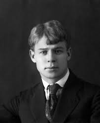
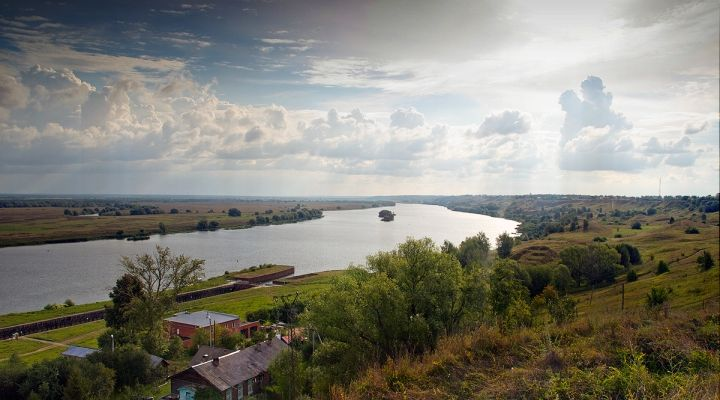

Что говорит о поэтах их Родина?
В произведениях многих русских классиков звучит тема Родины. Она проходит через их творчество красной линией. Любовь к своей Родине, к своему народу выступает источником вдохновения для многих композиторов, художников, писателей и поэтов. Стремление сделать свою родную страну еще лучше, еще прекраснее является основой для их произведений. Родина вызывает в каждом человеке самые теплые чувства. И сложно назвать поэта или писателя, который бы не посвятил своей Родине строки, идущие от души, самые искренние, самые трепетные.
Почему же Есенин так любил природу?

Село Константиново - родина одного из самых известных русских поэтов - Сергея Есенина.
Именно здесь, приблизительно в 40 километрах от Рязани, на живописном высоком правом берегу Оки в сентябре 1895 года родился будущий поэт.
В Константиново прошли его детство и юность.
Вот, что писал поэт о своей Родине:
Я посетил родимые места,
Ту сельщину,
Где жил мальчишкой,
Где каланчой с березовою вышкой
Взметнулась колокольня без креста.
Как много изменилось там,
В их бедном, неприглядном быте.
Какое множество открытий
За мною следовало по пятам.
Отцовский дом
Не мог я распознать:
Приметный клен уж под окном не машет,
И на крылечке не сидит уж мать,
Кормя цыплят крупитчатою кашей.
С. Есенин

Село Константиново
Маяковский – где родился, там и пригодился
И я, как весну человечества,
рожденную в трудах и в бою,
пою мое отечество,
республику мою!
В. Маяковский
О чем бы ни писал В. Маяковский, основной в его стихах всегда была тема Родины, поскольку поэт, по его мнению, это не только «народа водитель», но и «народный слуга». На службу своей Родине, своему народу, революции и поставил свое творчество этот великий поэт. Маяковского мало заботили абстрактные, общие вопросы. Он активно участвовал в жизни своей страны, был в курсе всех событий, искренне радовался достижениям советских людей, стремился к преодолению «пережитков». Его интересовала конкретика, и такими же предельно конкретными были его произведения, в которых он боролся со всяческой «дрянью»: бюрократизмом, пошлостью, мещанством, эгоизмом.
Перо — грозное оружие поэтов, и Маяковский умело им пользовался.